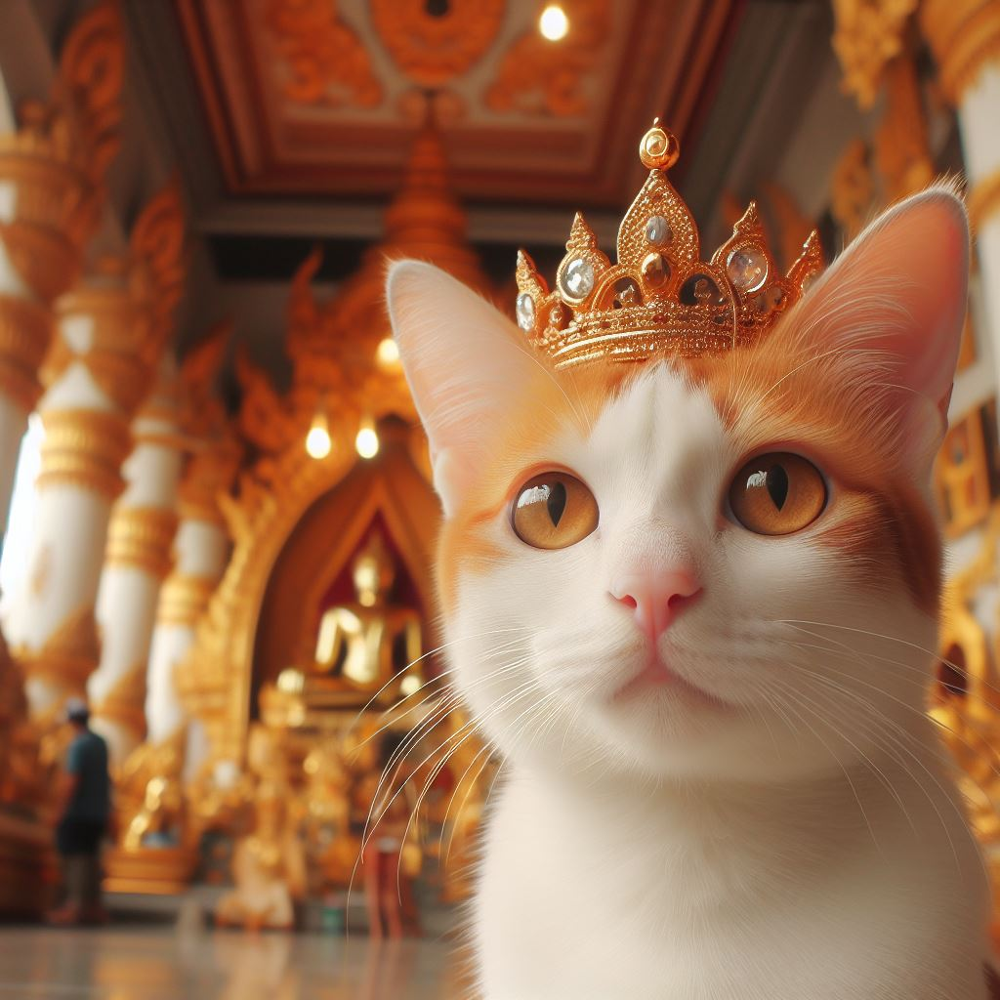
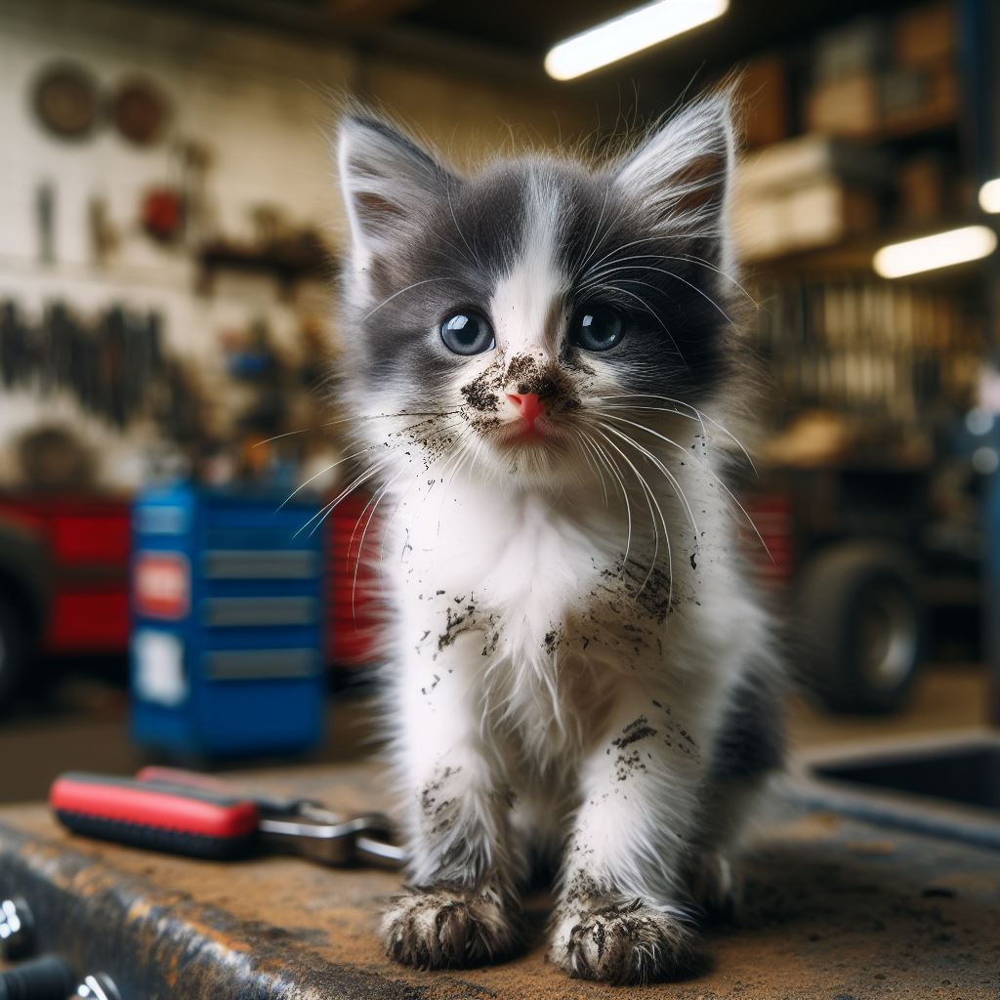
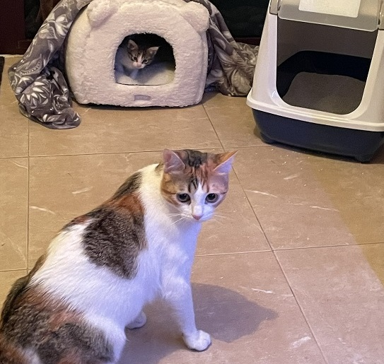
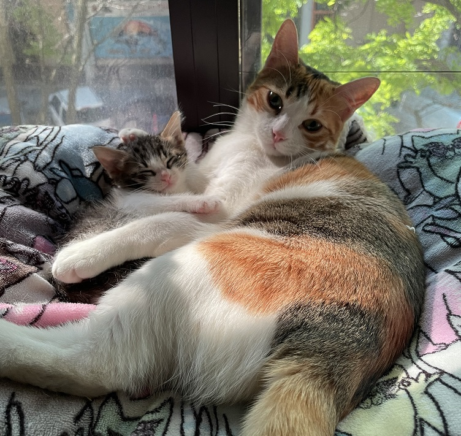

Flora: La Reina De La Casa
Flora, con su pelaje blanco y naranja, es una gata única en su especie. Su historia comenzó en las frías y desoladas perreras de Pinto, donde esperaba ansiosamente que una familia la adoptara. Su mirada inteligente y su actitud audaz llamaron la atención de una familia que buscaba un nuevo miembro gatuno para su hogar. Cuando la familia la llevó a casa, Flora demostró ser más que una simple gata. Era astuta y curiosa, explorando cada rincón de su nuevo territorio. Se subía a los muebles con gracia y se escondía en los armarios, siempre un paso por delante de todos. Su limpieza era impecable; pasaba horas acicalándose y manteniendo su pelaje suave y brillante. Pero lo que realmente hizo que Flora se ganara el corazón de su familia fue su amor incondicional. A pesar de su pasado en las perreras, ella confiaba plenamente en sus nuevos dueños. Se acurrucaba en sus regazos, ronroneando con felicidad, y les daba besos suaves en la frente. Flora se convirtió en la compañera perfecta, siempre dispuesta a brindar cariño y alegría. Con el tiempo, Flora se adueñó de la casa. Se apoderó del sofá, del zapatero, del armario y de la cama. Era la reina indiscutible, y todos los demás habitantes (humanos y mascotas por igual) se sometían a sus deseos. A veces, se sentaba en el umbral de la puerta, observando el mundo exterior con una mirada pícara. Parecía decir: “Este es mi reino, y aquí soy feliz”. Flora también tiene su lado aventurero. Se escabulle hacia el lavadero a observar la calle, cazar moscas, perseguir sombras, reflejos y hasta mariposas de papel. Aunque no es una gata callejera, su espíritu audaz la lleva a explorar los rincones más recónditos de su territorio. Pero siempre vuelve para estar cerca de sus dueños, o también, para disfrutar de una buena siesta junto a la ventana soleada. En resumen, Flora es mucho más que una simple gata. Es inteligente, audaz, pícara, limpia y amorosa. Su personalidad única la convierte en un miembro especial de la familia. Y aunque no lleva una corona como en la foto que la ilustra, todos saben que ella es la verdadera reina de la casa.
Ramoncito: El Compañero Inesperado
Un año después de la llegada de Flora, Ramoncito apareció en la vida de la familia. Pequeño y desorientado, con ojos curiosos y patitas temblorosas, Ramoncito necesitaba cuidados y amor. Al principio, Flora no estaba segura de qué hacer con este nuevo compañero. Sus maullidos se cruzaban y Flora lo desafiaba, le bufaba y le pegaba cada vez que él se acercaba. Ramoncito, sin embargo, no se daba por vencido. Seguía a Flora por toda la casa, intentando ganarse su afecto. A veces, Flora se escondía en lugares altos para escapar de él, pero Ramoncito siempre encontraba la manera de llegar hasta ella. Ramoncito llegó temeroso pero curioso. Exploró cada rincón de su nuevo hogar con sus patitas torpes. Flora, la gata mayor, lo observaba desde la distancia. Al principio, ella no estaba segura de qué hacer con este pequeño intruso. Flora no paraba de bufarlo y abofetearlo y seguía escondiendose en los lugares más altos para evitarlo. Pero Ramoncito no se dejó intimidar. Era audaz y valiente. Se acercaba a Flora con ojos suplicantes, buscando su aprobación. A veces, incluso le lamía la cabeza con cariño. Flora, poco a poco, comenzó a aceptarlo. Sus bufidos se convirtieron en ronroneos suaves, y Ramoncito encontró consuelo en su compañía. Características de Ramoncito: Audaz: A pesar de su corta edad, Ramoncito no teme explorar. Salta al suelo desde los muebles, persigue sombras y se aventura en cada rincón. Flora lo mira con admiración y, a veces, con un toque de envidia por su valentía. Sucio: Ramoncito no tiene miedo de ensuciarse. Su pelaje blanco y gris a menudo esta manchado de suciedad, su rostro con restos de atún no es de extrañar, pero eso no le importa. Esta demasiado ocupado descubriendo el mundo. Amoroso y Cariñoso: A pesar de su pasado difícil, Ramoncito anhela el afecto humano. Se acurruca en los regazos de la familia, buscando calor y seguridad. Sus ronroneos son como una melodía reconfortante en las noches tranquilas. Llorón: A cada rato, Ramoncito se siente hambriento y llora sin parar. Flora se acerca a él, lo lame por todos lados y lo consuela. Juntos hacen el equipo perfecto.
La Amistad que Floreció
Ramoncito había tenido un comienzo difícil. Rescatado de las perreras al igual que Flora, era un gatito pequeño de apenas un mes de edad. Su pelaje estaba manchado de grasa y suciedad. Aunque Flora lo miraba con desconfianza al principio, Ramoncito no se daba por vencido. Seguía sus pasos, intentando imitarla en todo. Con el pasar de los días, algo cambió. Flora comenzó a observar a Ramoncito con otros ojos. Lo veía luchar por trepar a los muebles o intentar atrapar su propia cola, y algo en ella se ablandaba. Un día, mientras Ramoncito dormía plácidamente en su cama improvisada, Flora se acercó y le dio un suave lametazo en la cabeza. Desde entonces, su relación comenzó a transformarse. Flora se convirtió en la hermana mayor de Ramoncito. Le enseñó a cazar insectos, a mantener su pelaje limpio y a explorar el mundo con valentía. Ramoncito, a su vez, la admiraba profundamente. La seguía a todas partes y trataba de imitarla en todo. A veces, se enredaba en sus patas mientras intentaba saltar como ella, pero Flora siempre lo ayudaba a levantarse. Con el tiempo, Flora y Ramoncito se convirtieron en inseparables. Juntos exploran los escondites mas recónditos de su hogar. Flora, la maestra, comparte sus conocimientos con Ramoncito, quien absorbe cada lección como una esponja. Aprenden a sortear obstáculos, a esconderse en los cajones de la cama y a disfrutar de la compañia de su familia.
Dos Almas Gemelas
Flora y Ramoncito demostraron que la amistad no conoce límites. Aunque Flora es la más inteligente, nunca menosprecia a su pequeño compañero. Ramoncito, por su parte, admira a Flora y se esfuerza por seguir sus pasos. Juntos, crearon un vínculo especial que trasciende las diferencias y las edades. Hoy, Flora y Ramoncito son dos almas gemelas. Siguen explorando el mundo juntos, enfrentando aventuras y desafíos. Flora sigue enseñando a Ramoncito, y él sigue aprendiendo con entusiasmo. En su compañía, su nuevo hogar se ha convertido en un lugar lleno de risas y travesuras. Así es como Flora y Ramoncito, dos gatitos adoptados, encontraron el amor y la amistad en un mundo que a veces puede parecer frío. Su historia nos recuerda que, incluso en las diferencias, hay espacio para la conexión, el amor y la alegría. 🐾❤️